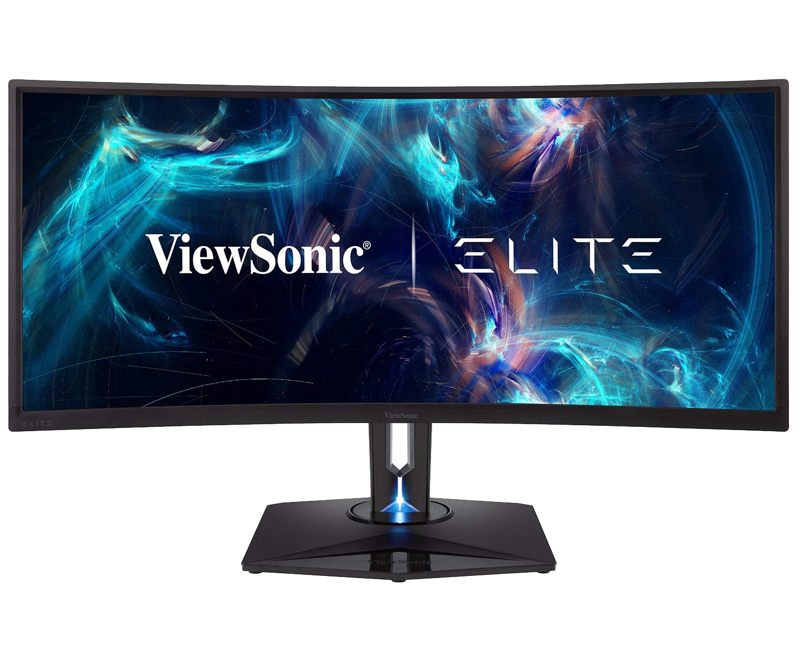

主機配備百百種，螢幕常常被當作一個像滑鼠、鍵盤一樣的附屬品，被定義為輔助整體運作的一項顯示設備，但滑鼠、鍵盤看手感，不同設計有很大的價差，螢幕的價位又靠什麼區分? 主要可切割成基礎型、繪圖型與電競型，依據面板種類、刷新率等有所不同，畫圖求色彩，電競看速度，尺寸從24-27吋是常見且適合操作的範圍，要大要小得搭配環境與用途，股市看盤手來個雙螢幕一次列出大量資訊也不為過。看似簡單的顯示器背後知識不容小覷，各種數據是否符合需求還要對上顯卡選擇，看似單純卻有滿滿大學問，準備好要去認識專屬於你的螢幕了嗎?
／低預算的簡便選擇 Sceptre E205W-16003R
❖ 最高解析度｜ 1600 x 900 px
❖ 螢幕尺寸 | 20吋
❖ 刷新率 | 60Hz (可高達 75Hz)
❖ 外接端口 | 2 x HDMI, VGA
❖ 長寬比 | 16:9
❖ 反應速度 | 5ms
❖ 面板 | TN
這款Sceptre走的是低價策略，可以明顯地看到面板使用的是色彩表現比較差的TN技術，TN技術通常強在反應速度可壓到1ms，E205W-16003R卻只能達到5ms，比較之下可以理解價格差異。不過若是不求精美畫質，又或是本身顯卡支援度沒這麼好，高於HD (1280 x 720 px) 的解析度已經足夠，符合發展趨勢的HDMI接口有兩個，還可轉接DVI，對於需要一個輸出裝置的使用者來看可不加思索的入手。
visit amazon／平價享有曲面視覺 Sceptre C278W-1920R
❖ 最高解析度｜ 1920 x 1080 px
❖ 螢幕尺寸 | 27 吋
❖ 刷新率 | 60Hz (可高達 75Hz)
❖ 外接端口 | HDMI, DisplayPort, VGA
❖ 長寬比 | 16:9
❖ 反應速度 | 5ms
❖ 面板 | VA
比起E205W-16003R，同是Sceptre出產的C278W-1920R在解析度上有所提升，大尺寸搭配曲面的面板減少視覺上的死角，採用可凸顯色彩的VA技術，蠻適合拿來當繪圖機使用，雖然反應速度仍舊不快，可能沒辦法玩比較激烈的打鬥遊戲，但若是步調比較緩慢像是一般的RPG遊戲等類型，這款螢幕會有很好的表現。市面上很多曲面顯示器由於技術層面拉高價位比起平面的會大幅躍升，若是想要用平面的價位享受環繞的效果不妨來看看Sceptre提供的方案，會有意想不到的收穫。
visit amazon／4K高畫質 Samsung LU32J590UQNXZA
❖ 最高解析度｜ 3840 x 2160 px
❖ 螢幕尺寸 | 32 吋
❖ 刷新率 | 60Hz
❖ 外接端口 | 2 x HDMI, 1 x DisplayPort
❖ 長寬比 | 16:9
❖ 反應速度 | 4ms
❖ 面板 | VA
不論是圖片或影片，畫面的表現越來越精細，相機的畫素越來越大，4k的影片也開始四處可見，接下來的時期4k將會慢慢攻佔市場，十年前很難想像千萬畫素這麼大的檔案做什麼用，現在則是不夠清晰華麗會傷眼睛。所以在預算足夠的狀況下若是顯卡有支援到4k不如就一次買到定位，看看這款Samsung LU32J590UQNXZA，32吋的大屏搭配精細的支架，沒有沉重壓迫感，卻能帶來高畫質的大螢幕享受，不論是看電影或畫圖，視覺上的空間都大大的增加。
visit amazon／電競專用寬螢幕 ViewSonic XG350R-C
❖ 最高解析度｜ 3440 x 1440 px
❖ 螢幕尺寸 | 35 吋
❖ 刷新率 | 100Hz
❖ 外接端口 | HDMI, DisplayPort, USB
❖ 長寬比 | 21:9
❖ 反應速度 | 3ms
❖ 面板 | MVA
最後當然是推坑的極致，超高畫質超大尺寸的曲面大屏，接觸電腦有段時間的人是否還記得當年口碑很好的品牌ViewSonic所推出的高品質螢幕們，不僅畫面表現優良也很耐用，看這帥氣的外型，硬是比一般VA面板4ms還快的反應速度，微微的曲面拉寬螢幕，不難去想像打電動時帶來的視覺震撼。加上高解析度、高刷新率，各種接口的需求都沒少到，這把火燒下去沒點下購買恐怕難以停止。
visit amazon